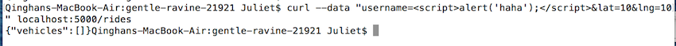
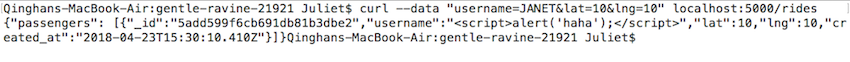
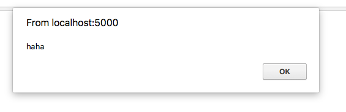
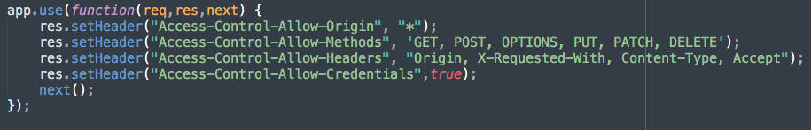
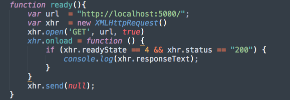
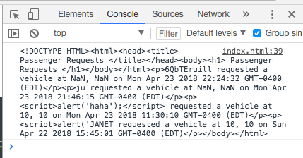

I have received a web application that deals with real-time vehicle ride requests. My goal is to screen for security and privacy problems in the application
Followed the suggested "Two step process method" -- First perform "black box" testing, attacking the application without reading the code; then perform "white box" testing after reading the code. I did not use an auxiliary tool in this assignment
Location: Line 35 in index.js when the application takes in user input
Severity of the issue: high Scripting is a powerful tool that may cause various issues. It is also a widespread and well-known web security issue that hackers may start from.
Description of issue: The application stores input from users in the database without sanitize the input. So users can perform attacks by inputing malicious scripts. Since XSS is a very common issue, it was the first thing I tried when I do "black box" testing, and the hacking was successful. 
Proof of vulnerability:
 Resolution: The application should sanitize user input by using this line of code -- $ var username = request.body.username.replace(/[^\w\s]/gi, '');
Location: Line 24-30 in index.js
Severity of the issue: medium Access-Control-Allow-Origin: * allows everyone to use the server and may cause potential data breach. Similarly with Access-Control-Allow-Methods, the server allows various HTTP methods that are not needed and should not be allowed to execute by users. In this application for now, it is not too big an issue because the server only supports POST and GET methods. However, if the server supports more methods and anyone is allowed to delete, this will not look good.
Description of issue: I found the issue through looking at the code and the CORS header attracted my attention. I wrote a simple function that uses GET method on '/' page and prints the result to console to check if the attack is successful.  
Proof of vulnerability:
Resolution: Restrict the origin to specific domain(s) and only allow user to execute HTTP POST method